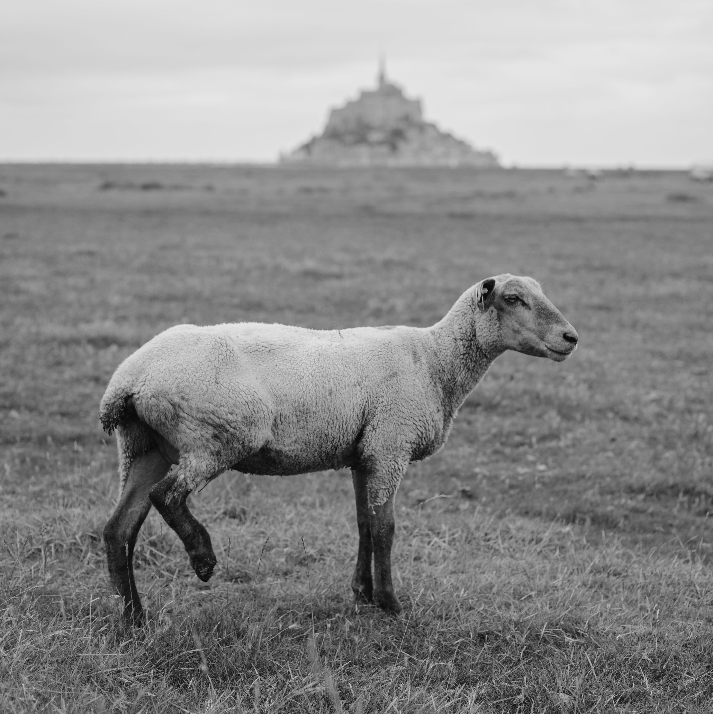

Наступного дня, в неділю 18/02/2024, відбудеться вінчання
о 13 годині в українській православній церкві святого апостола Симона Зелота6 Rue de Palestine, 75019 Paris

Просимо вас щонайшвидше заповнити маленьку анкету про весільну вечерю (це потребує однієї хвилини):
Це тут
Ми запрошуємо вас на всі три події, але якщо ви маєте змогу бути тільки на одній - нічого страшного 🙂